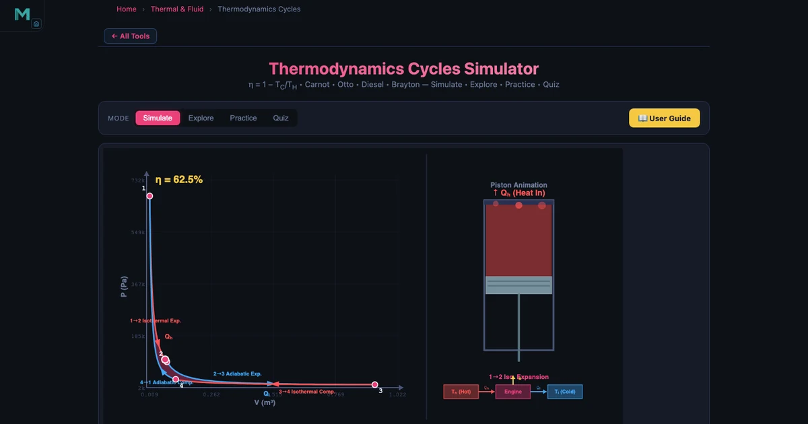
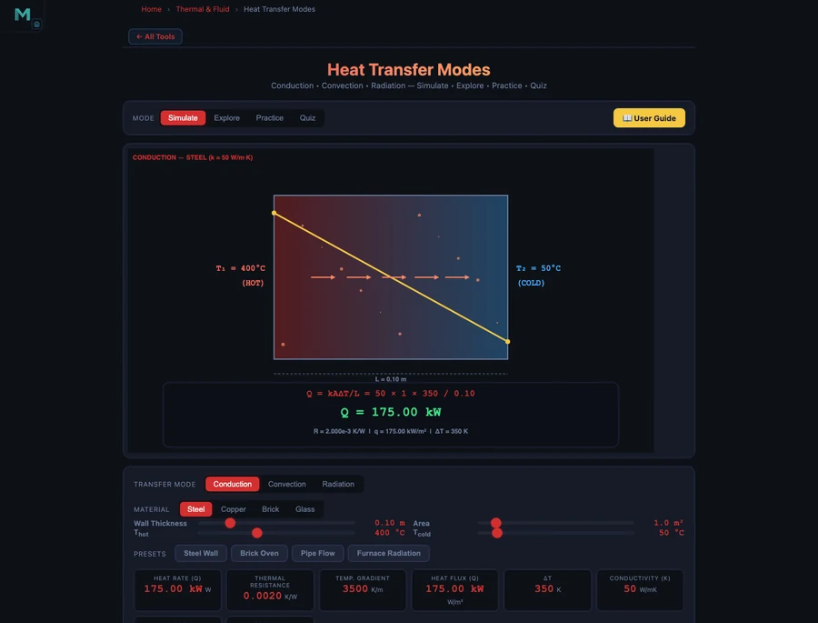

Learn Thermal Engineering With Simulators — Free Student Guide

- Five free NHIT VisualLab tools cover the thermal engineering curriculum: Thermodynamics (Carnot, Otto, Diesel, Brayton cycles), Heat Transfer (conduction, convection, radiation), Refrigeration Cycle, Ideal Gas Law, and Bernoulli’s Principle.
- The Carnot efficiency η = 1 − TC/TH sets the ceiling for every heat engine — at TH = 1000 K and TC = 350 K that ceiling is 65%, while a real Otto cycle (r = 10) reaches only 60.19%.
- The fastest way to learn is to predict-then-verify: solve a problem by hand with the governing equation (η = 1 − TC/TH, Q = kAΔT/L, COP = TC/(TH − TC), PV = nRT), then enter the same values in the simulator to confirm.
Thermal engineering hides inside every machine you use. Your car engine converts fuel combustion into motion. Your air conditioner pumps heat from a cool room to the warmer outdoors. The pipe delivering hot water to your tap conducts, convects, and loses heat along the way. Understanding how these processes work — not just memorising their formulas — is what separates an engineer who can design from one who can only calculate.
The problem with learning thermal engineering has always been the same: you cannot hold heat transfer in your hands. You can read Fourier’s Law and understand the algebra, but watching how Q changes when you double the wall thickness or swap from copper to brick requires either an expensive lab or a good simulator. Five of NHIT VisualLab’s free tools cover the full thermal engineering curriculum from first-law thermodynamics to fluid dynamics, and this guide walks through each one with the numbers that make them click.
Thermal Engineering — The Subject That Hides Inside Every Engine and Fridge
Thermal engineering is built on three foundational ideas. First: energy is conserved but can change form (First Law of Thermodynamics, ΔU = Q − W). Second: heat naturally flows from hot to cold, and any system that reverses that flow requires work (Second Law). Third: the properties of gases and fluids are predictable — pressure, volume, temperature, and entropy follow well-defined relationships that engineers can exploit.
Every engine, refrigerator, boiler, and heat exchanger in existence is an application of those three ideas. The challenge for students is that none of it is visible. You cannot see the entropy rising in a gas turbine combustion chamber or the enthalpy drop across a throttle valve. This is why visual, interactive simulators are not just convenient supplements to a thermal engineering course — they are genuinely the best way to build the physical intuition the subject demands.
If you teach online and have encountered the specific challenges that thermal content presents in a remote setting, the article on Online Teaching Challenges in Physics Education covers the underlying pedagogy in detail. The short version: students who can change a parameter and immediately see the consequence learn thermodynamics far faster than students who only work through static examples.
Tool 1: Thermodynamics Simulator — Carnot, Otto, Diesel, and Brayton Cycles
The Thermodynamics Simulator covers four power cycles plus the foundational concepts of the First Law, entropy, and enthalpy. Start with the Carnot cycle because it sets the theoretical ceiling that every other cycle is measured against.
The Carnot efficiency formula is:
\[\eta_{\text{Carnot}} = 1 - \dfrac{T_C}{T_H}\]
With a hot reservoir of TH = 1000 K (approximately 727 °C, typical of combustion gases) and a cold reservoir of TC = 350 K (approximately 77 °C, achievable ambient conditions):
\[\eta_{\text{Carnot}} = 1 - \dfrac{350}{1000} = 0.65 \quad \Rightarrow \quad 65\%\]
That 65% is the hard ceiling. No heat engine operating between those two reservoirs can do better, regardless of its mechanical perfection. Now compare with the Otto cycle, which models a petrol engine:
\[\eta_{\text{Otto}} = 1 - \dfrac{1}{r^{\,\gamma - 1}}\]
With compression ratio r = 10 and γ = 1.4 (diatomic gas, air standard):
\[\eta_{\text{Otto}} = 1 - \dfrac{1}{10^{0.4}} = 1 - \dfrac{1}{2.512} = 1 - 0.3981 \approx 60.19\%\]
The Brayton cycle (gas turbines and jet engines) uses pressure ratio rp instead of compression ratio:
\[\eta_{\text{Brayton}} = 1 - \dfrac{1}{r_p^{\,(\gamma-1)/\gamma}}\]
With rp = 12 and γ = 1.4:
\[\eta_{\text{Brayton}} = 1 - \dfrac{1}{12^{0.2857}} = 1 - \dfrac{1}{1.969} \approx 50.81\%\]
Seeing Carnot at 65%, Otto at 60.19%, and Brayton at 50.81% side by side in the simulator makes the hierarchy immediate. The Carnot cycle is a theoretical ideal. The Otto cycle is efficient but limited by knock at high compression ratios. The Brayton cycle sacrifices some efficiency but runs at continuous power output, making it ideal for aircraft. The First Law underpins all three: ΔU = Q − W tells you that every joule of work output costs at least one joule of heat input, and entropy (ΔS = Q_rev/T) explains why the conversion can never be perfect.
Tool 2: Heat Transfer Simulator — Conduction, Convection, and Radiation
The Heat Transfer Simulator covers all three modes of heat transfer with separate interactive panels for each. The ability to switch modes while holding area and temperature difference constant makes direct comparison possible in a way no physical experiment can match.

Conduction is governed by Fourier’s Law:
\[Q = \dfrac{k \cdot A \cdot \Delta T}{L}\]
where k is thermal conductivity, A is cross-sectional area, ΔT is temperature difference, and L is thickness. The material difference is dramatic: copper has k ≈ 385 W/m·K, steel k ≈ 50 W/m·K, and brick k ≈ 0.7 W/m·K. For the same 1 m² wall, 0.1 m thick, with ΔT = 50 °C: copper conducts 192,500 W, steel 25,000 W, and brick just 350 W. That 550× difference between copper and brick is why the material choice dominates heat exchanger design. Thermal resistance R = L/(kA) lets you add resistances in series for composite walls: R_total = R1 + R2 + …
Convection uses Newton’s Law of Cooling:
\[Q = h \cdot A \cdot (T_s - T_{\infty})\]
The convection coefficient h is the key variable. Natural (free) convection delivers h = 5–25 W/m²·K — air moving on its own by buoyancy. Forced convection (a fan or pump driving flow) gives h = 25–500 W/m²·K, an order of magnitude more effective. This is why CPU coolers use fans: going from natural to forced convection on the same heatsink can multiply heat rejection tenfold.
Radiation follows the Stefan-Boltzmann law:
\[Q = \varepsilon \sigma A \left( T_1^4 - T_2^4 \right)\]
where σ = 5.67 × 10−8 W/m²·K4 and ε is emissivity (1 for a perfect blackbody). Notice the fourth-power dependence on temperature — radiation becomes dominant at high temperatures, which is why furnace walls and space radiators are designed so differently from room-temperature heat exchangers.
Tool 3: Refrigeration Cycle — How Your Air Conditioner Works
The Refrigeration Cycle Simulator models both the Carnot refrigerator (the theoretical benchmark) and the vapour-compression cycle (the system inside every air conditioner, refrigerator, and heat pump).
The Carnot COP for a refrigerator is:
\[\text{COP}_{\text{refrig}} = \dfrac{T_C}{T_H - T_C}\]
With TC = 250 K (cold space, about −23 °C) and TH = 310 K (ambient, about 37 °C):
\[\text{COP} = \dfrac{250}{310 - 250} = \dfrac{250}{60} = 4.17\]
A COP of 4.17 means 4.17 joules of heat are moved from the cold space for every 1 joule of electrical work consumed. This is why refrigerators are not 100% efficient in the conventional sense — they are 417% efficient at moving heat, even though they can never create heat from nothing.
For a heat pump operating between the same reservoirs, the COP shifts:
\[\text{COP}_{\text{heat pump}} = \dfrac{T_H}{T_H - T_C} = \dfrac{310}{60} = 5.17\]
The vapour-compression cycle that real systems use follows four processes in sequence: compression (the compressor raises refrigerant pressure and temperature), condensation (heat is rejected to the hot environment in the condenser), expansion (the expansion valve drops pressure and temperature sharply), and evaporation (the refrigerant absorbs heat from the cold space in the evaporator). The simulator animates each process on a pressure-enthalpy diagram so students can trace exactly where work enters the cycle and where heat crosses the system boundary.
Tool 4 & 5: Ideal Gas Law and Bernoulli’s Principle — Gases and Fluid Flow
Thermal engineering is incomplete without understanding how gases behave under pressure and temperature changes, and how fluid flow connects velocity, pressure, and elevation. These two simulators fill that gap.
The Ideal Gas Law Simulator is built around:
\[PV = nRT\]
where P is pressure (Pa), V is volume (m³), n is moles of gas, R = 8.314 J/mol·K is the universal gas constant, and T is temperature (K). At standard conditions — P = 101,325 Pa (1 atm) and T = 300 K — 1 mole of ideal gas occupies:
\[V = \dfrac{nRT}{P} = \dfrac{1 \times 8.314 \times 300}{101325} = 0.02463 \text{ m}^3 = 24.63 \text{ L}\]
Boyle’s Law (PV = const at fixed T) and Charles’s Law (V/T = const at fixed P) are both special cases of PV = nRT. The simulator makes this explicit: lock T and vary P to see Boyle’s Law, lock P and vary T to see Charles’s Law. When students see both emerge from the same parent equation, the subject stops feeling like a collection of separate laws and starts feeling like one coherent model of gas behaviour.
The Bernoulli’s Principle Simulator applies the energy equation for steady, incompressible flow:
\[P + \tfrac{1}{2}\rho v^2 + \rho g h = \text{constant}\]
Combined with the continuity equation A1v1 = A2v2, the simulator shows how constricting a pipe forces velocity up and pressure down — the Venturi effect. Students can explore why aircraft wings generate lift, how carburettors draw fuel, and how a Pitot tube measures flow velocity from pressure difference. These are not exotic applications; they appear in every thermal and fluid system engineering course. The connection to thermodynamics is direct: the Bernoulli equation is the mechanical energy version of the First Law applied to steady flow.
A 10-Week Thermal Engineering Learning Plan
Used in sequence, these five simulators map cleanly onto a ten-week introductory thermal engineering curriculum. The plan below assumes two simulator sessions per week, each 45–60 minutes.
Weeks 1–2: Thermodynamics foundations. Begin with the Thermodynamics Simulator on Carnot mode. Set TH and TC to match a real power plant (TH = 900 K, TC = 300 K) and calculate efficiency by hand before checking in the simulator. Week 2: switch to Otto cycle. Vary compression ratio from r = 6 to r = 12 and plot efficiency versus r. Students discover the diminishing returns — going from r = 6 to r = 8 gains more than going from r = 10 to r = 12.
Weeks 3–4: Heat transfer modes. Week 3 focuses on the Heat Transfer Simulator conduction mode. Calculate Q for a steel wall and a copper wall of the same dimensions, then verify. Week 4: switch to convection. Compare natural versus forced convection on the same surface area. Run the radiation mode on a very hot surface (T1 = 1200 K) to see when radiation becomes significant.
Weeks 5–6: Refrigeration and heat pumps. Use the Refrigeration Cycle Simulator to build intuition for COP. Ask students: “If the ambient temperature rises from 35 °C to 45 °C while the cold space stays at −23 °C, what happens to COP?” They calculate, then verify. Answer: COP drops from 4.17 to 3.33 as ΔT rises from 60 K to 75 K. This is why air conditioners lose efficiency on hot days.
Weeks 7–8: Ideal gas behaviour. Use the Ideal Gas Law Simulator for isothermal and isobaric processes. Set up a scenario matching an engine cylinder at top dead centre (high P, low V) and bottom dead centre (low P, high V), then calculate the work done using PV = nRT at each point.
Weeks 9–10: Fluid flow and system integration. Use the Bernoulli’s Principle Simulator to connect fluid velocity to pressure changes. The final week brings everything together: model a simple gas turbine system using Brayton cycle efficiency, estimate the compressor and turbine work using fluid flow principles, and discuss where the heat transfer analysis fits. By this point, students have built quantitative intuition across all five tools — the kind of understanding that makes exam problems tractable rather than intimidating.
For instructors dealing with the broader challenge of delivering technical content remotely, High School Science Simulators — 5 Free Virtual Labs covers complementary strategies for building engagement in online science sessions.
Explore These Free Thermal Engineering Simulators
All tools below are free — no account, no download, runs in any browser.
Key Takeaways
- The Carnot efficiency η = 1 − TC/TH defines the ceiling every real cycle is measured against. With TH = 1000 K and TC = 350 K, that ceiling is 65% — Otto reaches 60.19%, Brayton reaches 50.81%.
- Heat transfer material choice is more powerful than geometry: copper (k = 385 W/m·K) conducts 550× more heat than brick (k = 0.7 W/m·K) for the same wall dimensions and temperature difference.
- Forced convection (h = 25–500 W/m²·K) is up to 100× more effective than natural convection (h = 5–25 W/m²·K) — which is why adding a fan to a heatsink transforms its performance.
- Refrigeration COP = TC/(TH − TC): with TC = 250 K and TH = 310 K the Carnot COP is 4.17, meaning 4.17 J of heat is moved per joule of work. As ambient temperature rises, COP falls and energy consumption climbs.
- PV = nRT unifies Boyle’s Law and Charles’s Law as special cases — at 300 K and 1 atm, 1 mole occupies 24.63 L. The simulator makes both laws emerge from one equation rather than appearing as isolated rules.
- The Bernoulli equation P + ½ρv² + ρgh = const connects fluid mechanics to thermodynamics: it is the mechanical energy form of the First Law applied to steady flow, and it explains the Venturi effect, Pitot tubes, and lift generation.
Frequently Asked Questions
What thermodynamic cycles does the simulator cover and which one should I study first?
The Thermodynamics Simulator covers four cycles: Carnot (the theoretical efficiency ceiling), Otto (petrol engines), Diesel (compression-ignition engines), and Brayton (gas turbines and jet engines). Start with the Carnot cycle because it defines the maximum possible efficiency for any heat engine operating between two temperature reservoirs. Once you understand that no real engine can exceed η = 1 − TC/TH, the Otto and Diesel cycles become easier to interpret — you are always comparing a real engine against the Carnot benchmark. For example, with TH = 1000 K and TC = 350 K, Carnot efficiency is 65%, while an Otto engine with compression ratio r = 10 reaches only 60.19%, and a Brayton cycle with pressure ratio rp = 12 reaches 50.81%.
How does the Heat Transfer Simulator distinguish between conduction, convection, and radiation?
The Heat Transfer Simulator has three separate modes, each with its own governing equation and interactive parameters. Conduction mode uses Fourier’s Law: Q = kAΔT/L, where k is thermal conductivity (copper ≈ 385 W/m·K, steel ≈ 50 W/m·K, brick ≈ 0.7 W/m·K). Convection mode uses Newton’s Law of Cooling: Q = hA(Ts − T∞), where h is the convection coefficient (forced convection h = 25–500 W/m²·K, natural convection h = 5–25 W/m²·K). Radiation mode uses the Stefan-Boltzmann law: Q = εσA(T1&sup4; − T2&sup4;). Switching between modes while keeping the area and temperature difference constant lets students directly compare how much heat each mechanism transfers under the same conditions.
What is COP in the Refrigeration Cycle Simulator and why does it matter?
COP stands for Coefficient of Performance — it measures how much useful cooling effect you get per unit of work input. For a Carnot refrigerator, COP = TC / (TH − TC). With TC = 250 K (cold reservoir, about −23 °C) and TH = 310 K (hot reservoir, about 37 °C), the Carnot COP = 250 / 60 = 4.17. This means a perfect refrigerator extracts 4.17 joules of heat from the cold space for every 1 joule of electrical work consumed. Real vapour-compression systems are always below this value. COP matters because it directly determines energy efficiency and running cost — a system with COP 3 uses 39% more electricity than one with COP 4.17 to move the same heat load.
How does the Ideal Gas Law Simulator connect Boyle’s Law and Charles’s Law?
The Ideal Gas Law PV = nRT is the parent equation that contains both Boyle’s Law and Charles’s Law as special cases. In the simulator, if you fix temperature T and vary pressure P, the volume V changes inversely — this is Boyle’s Law (PV = constant at fixed T). If you fix pressure P and vary temperature T, the volume changes proportionally — this is Charles’s Law (V/T = constant at fixed P). At standard conditions of 1 atm (101.325 kPa) and T = 300 K, 1 mole of ideal gas occupies V = nRT/P = (1 × 8.314 × 300) / 101325 = 0.02463 m³ = 24.63 L. The simulator lets students toggle between fixed-T and fixed-P scenarios so both special cases emerge naturally from the same equation.
Can these simulators help me prepare for thermodynamics exams at university?
Yes — these simulators are particularly effective for exam preparation because they let you verify your hand calculations instantly. Work through a Carnot efficiency problem by hand (η = 1 − TC/TH), then enter the same temperatures in the Thermodynamics Simulator to confirm your answer. Do the same for COP in the Refrigeration Cycle Simulator and for PV = nRT in the Ideal Gas Law Simulator. The habit of predicting-then-verifying builds both calculation confidence and conceptual understanding. The simulators also help you build physical intuition — for example, understanding why increasing the compression ratio in an Otto engine always increases efficiency, or why COP improves as the temperature difference between reservoirs shrinks.
Thermal engineering rewards students who understand why the numbers come out the way they do, not just which formula to plug into. The Carnot efficiency ceiling, the COP of a refrigerator, the conductivity difference between copper and brick — these are not arbitrary values. They follow from the same fundamental principles, and each simulator in this guide is designed to make those principles visible rather than abstract.
Start your thermal engineering study session with the Thermodynamics Simulator — set your temperature reservoirs, calculate Carnot efficiency by hand, then verify. That one exercise anchors everything else in this guide.